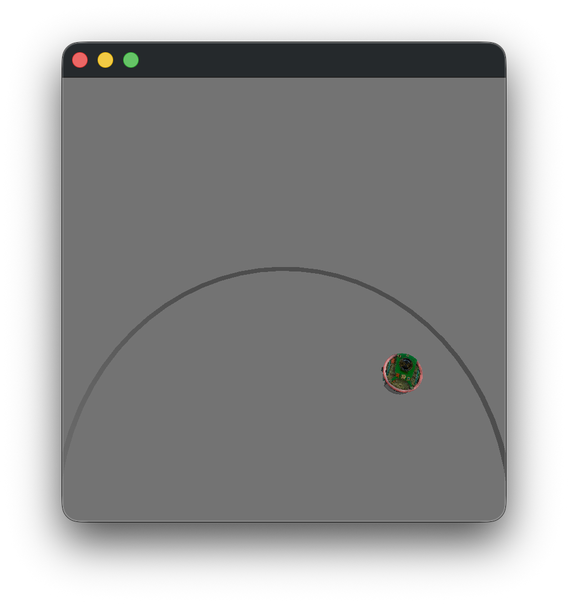
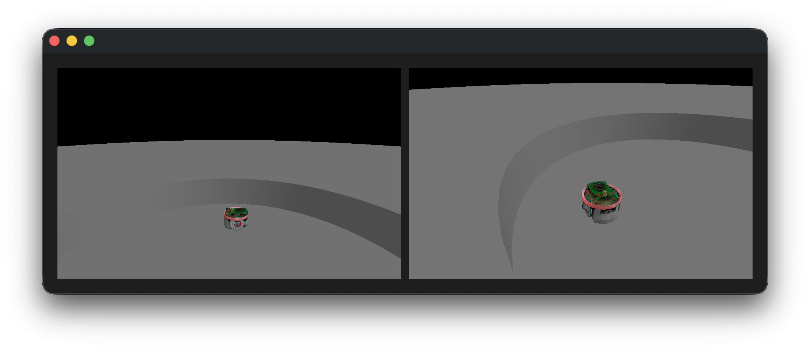

Visualization#
Viewer#
The Qt widget that displays the world can be run in a script, using a blocking loop, like in Hello Thymio, or in an interactive session that does not block and allows to visualize the world while manipulating it.
Standalone#
In this example, we instantiate a pyenki.viewer.WorldView that shows a world running in real-time:
import pyenki
import pyenki.viewer
def create_world() -> pyenki.World:
world = pyenki.World(radius=40)
epuck = pyenki.EPuck(camera=False)
epuck.position = (20, 20)
epuck.left_wheel_target_speed = 10.0
epuck.set_led_ring(True)
world.add_object(epuck)
return world
def main() -> None:
# Needs to be called before creating the first view
world = create_world()
pyenki.viewer.init()
viewer = pyenki.viewer.WorldView(world=world, walls_height=2)
viewer.reset_camera()
viewer.show()
viewer.start_updating_world(0.1)
# executes the runloop for a while
pyenki.viewer.run(duration=10)
pyenki.viewer.cleanup()
if __name__ == '__main__':
main()
{kind=link}

Integrated in PySide or PyQt#
The pyenki.viewer.WorldView can be integrated as any other Qt widget in a more complex interface.
In these example, we manually create and run a Qt application, with a window that displays a world from two different points of view (using either PyQt6 or PySide6)
import pyenki
import pyenki.viewer
from world_view import create_world
def main() -> None:
# PyQt6 requires the native viewer implemented in C++
assert pyenki.viewer.use_native
from PyQt6.QtCore import QCoreApplication, Qt
from PyQt6.QtWidgets import QApplication, QHBoxLayout, QWidget
# equivalent to pyenki.viewer.init()
# needs to be called before creating the first widget
QCoreApplication.setAttribute(
Qt.ApplicationAttribute.AA_ShareOpenGLContexts),
app = QApplication([])
world = create_world()
viewer_1 = pyenki.viewer.WorldView(world=world,
camera_position=(-20, -20),
camera_altitude=20)
viewer_1.point_camera(target_position=(20, 20), target_altitude=5)
viewer_2 = pyenki.viewer.WorldView(world=world,
helpers=False,
camera_altitude=30,
camera_is_ortho=False)
viewer_2.move_camera(target_position=(20, 20),
target_altitude=10,
yaw=-1,
pitch=-0.5)
window = QWidget()
hbox = QHBoxLayout(window)
window.resize(960, 320)
# Note that we get a PyQt compatible widget
# with `pyqt_widget`
hbox.addWidget(viewer_1.pyqt_widget)
hbox.addWidget(viewer_2.pyqt_widget)
window.show()
viewer_1.start_updating_world(0.1)
app.exec()
if __name__ == '__main__':
main()
from typing import cast
import pyenki
import pyenki.viewer
from world_view import create_world
def main() -> None:
# PySide6 requires the viewer implemented in Python
assert not pyenki.viewer.use_native
from pyenki.viewer.utils import setup_context
from PySide6.QtCore import QCoreApplication, Qt
from PySide6.QtWidgets import QApplication, QHBoxLayout, QWidget
world = create_world()
# replaces pyenki.viewer.init
# needs to be called before creating any widget
QCoreApplication.setAttribute(
Qt.ApplicationAttribute.AA_ShareOpenGLContexts),
setup_context()
app = QApplication([])
world = create_world()
viewer_1 = pyenki.viewer.WorldView(world=world,
camera_position=(-20, -20),
camera_altitude=20)
viewer_1.point_camera(target_position=(20, 20), target_altitude=5)
viewer_2 = pyenki.viewer.WorldView(world=world,
helpers=False,
camera_altitude=30,
camera_is_ortho=False)
viewer_2.move_camera(target_position=(20, 20),
target_altitude=10,
yaw=-1,
pitch=-0.5)
window = QWidget()
hbox = QHBoxLayout(window)
window.resize(960, 320)
hbox.addWidget(cast('QWidget', viewer_1))
hbox.addWidget(cast('QWidget', viewer_2))
window.show()
viewer_1.start_updating_world(0.1)
app.exec()
if __name__ == '__main__':
main()
{kind=link}

In a notebook#
We support visualizing a simulation inside Jupyter notebooks thanks to jupyter_rfb:
import pyenki
world = pyenki.World()
thymio = pyenki.Thymio2()
thymio.left_wheel_target_speed = 10
world.add_object(thymio)
from pyenki.buffer import EnkiRemoteFrameBuffer
w = EnkiRemoteFrameBuffer(world=world)
w
await w.run_async(time_step=0.1, duration=5)
See also
Render an image#
To render a single image (and/or save it), we can run:
import pyenki
import pyenki.viewer
pyenki.viewer.init()
world = pyenki.World(radius=100)
epuck = pyenki.EPuck()
epuck.set_led_ring(True)
epuck.position = (0, -12)
world.add_object(epuck)
thymio = pyenki.Thymio2()
thymio.set_led_top(red=1)
thymio.position = (0, 0)
world.add_object(thymio)
marxbot = pyenki.Marxbot()
marxbot.position = (0, 20)
world.add_object(marxbot)
pyenki.viewer.save_image(world,
"world.png",
camera_position=(30, -10),
camera_altitude=20,
camera_yaw=2.6,
camera_pitch=-0.487,
width=1280,
height=720)
pyenki.viewer.cleanup()
print('saved world.png')
Generate a video#
To generate a video from a simulation, we can run:
import pyenki
import pyenki.viewer
from pyenki.video import make_video
pyenki.viewer.init()
world = pyenki.World()
thymio = pyenki.Thymio2()
thymio.left_wheel_target_speed = 10
thymio.right_wheel_target_speed = -6
thymio.set_led_circle(-1, 1.0)
thymio.set_led_buttons(0, 1.0)
thymio.set_led_buttons(2, 1.0)
thymio.set_led_top(1.0, 0.0, 0.3)
world.add_object(thymio)
v = make_video(world,
time_step=0.033,
duration=20,
camera_position=(0, -20),
camera_altitude=20,
camera_pitch=-0.7,
camera_yaw=1.5,
width=1280,
height=720)
v.write_videofile('world.mp4', fps=30)
pyenki.viewer.cleanup()
print('saved world.mp4')